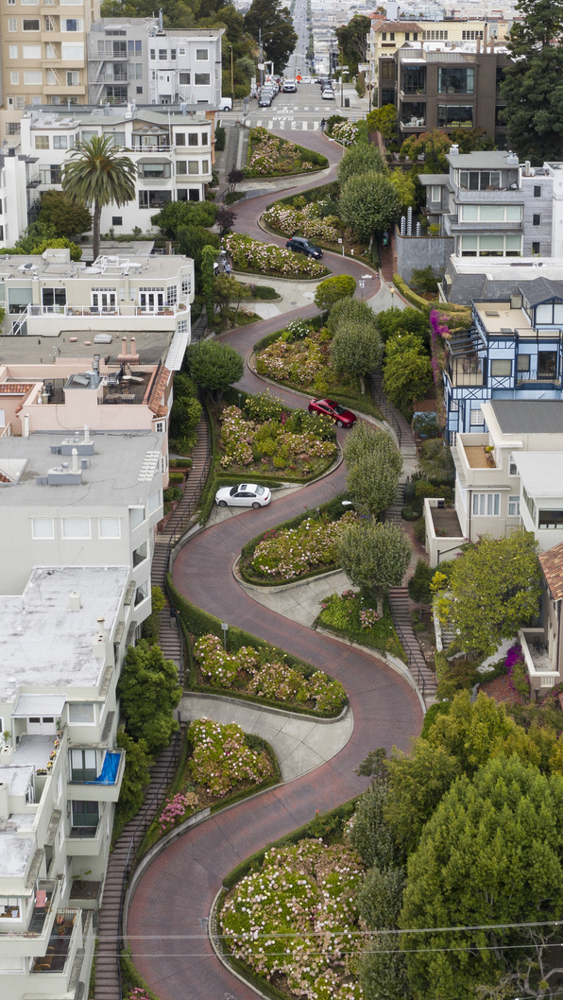
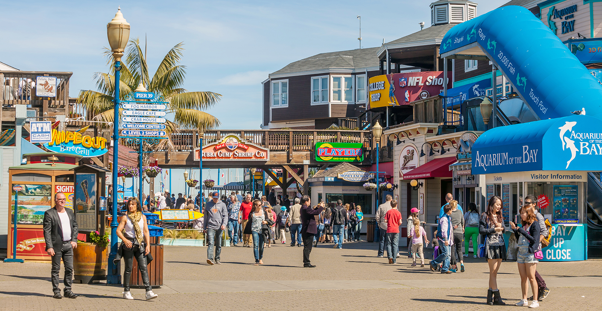
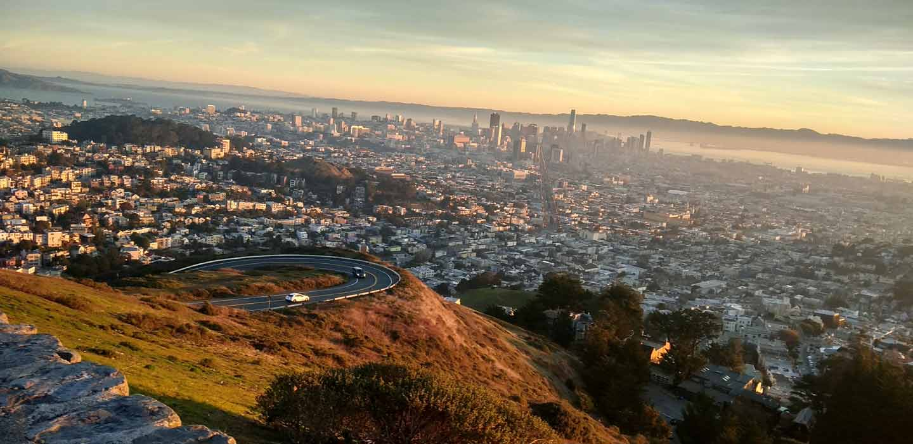

San Francisco is one of the biggest cities in the United States's. A few of San Francisco's attractions are beautiful, like the Golden Gate Bridge, Pier 39, Twin Peaks and etc!San Francisco never fails to amaze visitors and suprise them with amazing views. With the attractions of San Francisco, there are also very fun things you could do here! Few of them including SkyStar, which is a ferriswheel loacted at the Golden Gate Park, Pier 39 where there are amazing food/games/aquariums/rides and even have Boat Tours, Lombard Street which is the most crooked street in the world.
As stated on the Brief Description of San Francisco, this is the most crooked crooked street in the world!(Crazy Right?), as it is very cool and interesting, We would say that the flowers of the edge of the streets look amazing aswell. If you were to visit San Francisco, I would reccomend you to add Lombard Street to the list for you to explore.

Pier 39! One of the most exciting things about the city. The Pier, as stated before, has a lot of activities you could do there! From the Seals to the Mirror Maze to the never ending amazing dishes/food! I suggest if you're planning to hang out at the Pier 39, make sure the weather is looking hot.. you won't regret it!

Now, this is the famous Twin Peaks, I find this place very calm and just a beautiful place in general, as you can see in the photo, it has an amazing view of the city that you could die for. As it is also San Francisco's tallest “ building” it is really an amazing place to visit during your free time whether you wanted to take a hike or to just go there and visit and to just take a picture for the gram.
San Francisco has been one of the United States's most diverse cities since the World War II happened. The culture of San Francisco has its major and diversity aswell, in terms of music to cuisines to festivals and so on so on.
San Francisco has a smaller percentage of children than any other major metropolitan area in the United States. San Francisco is also the 13th most populous city in the country with a density of 6,266 people per square mile. It's the second most densely populated city in the country after New York City.
San Francisco's educational attainment for graduating highschool is about 88.4% ,which is about the same rate as the SF-Oakalnd-Berkeley(89.6), CA metro area and a little bit higher than the rate in California overall(84%). San Francisco's educational attaainment for graduating college with a diploma is a 59.2% which is about 20% higher tha SF-Oakland-Berkeley(51.4%),CA metro area and is 1.5 times more than the rate in California.(35%)
People who drive to work in San Francisco are estimated to be driving 34.7 minutes a day. That time is about the same as the figure in San Francisco-Oakland-Berkeley, CA metro area which is 35.2 minutes. Although it is about 10% more than the overall figure in california which is about 30.7 minutes!